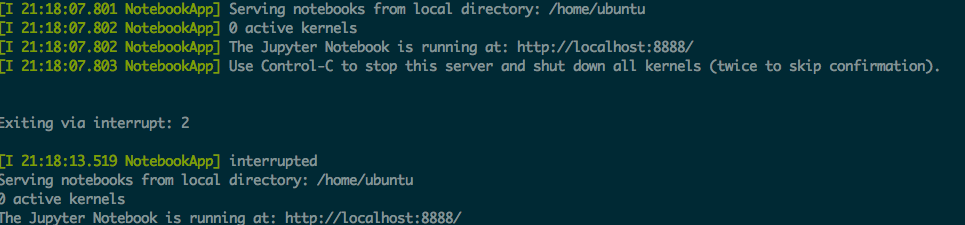
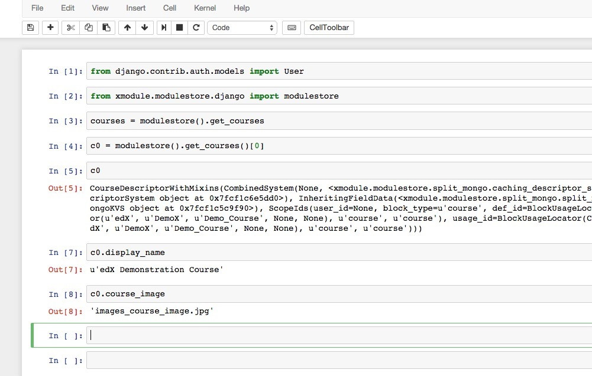
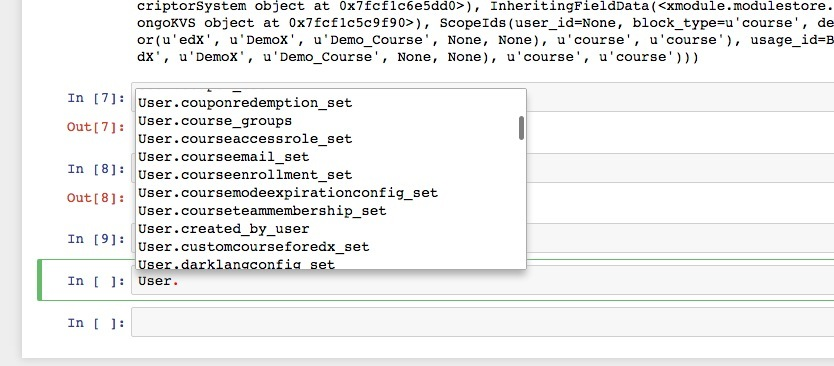
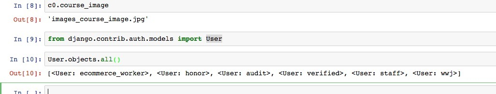
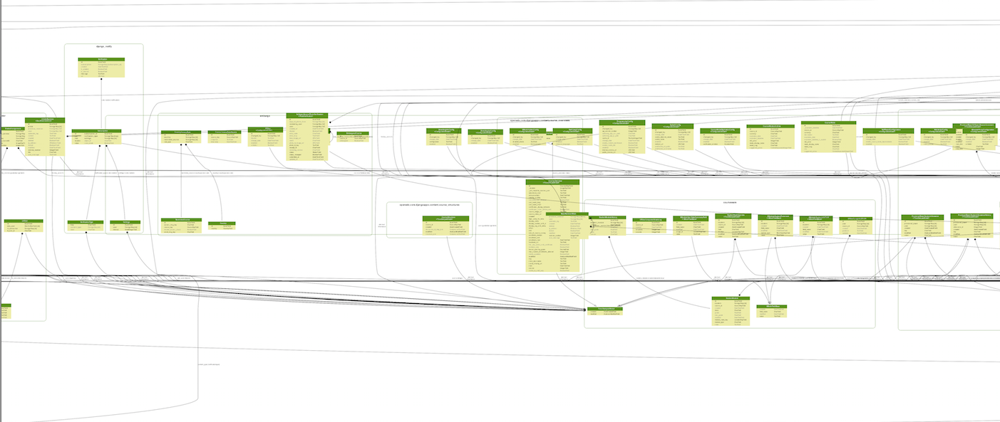
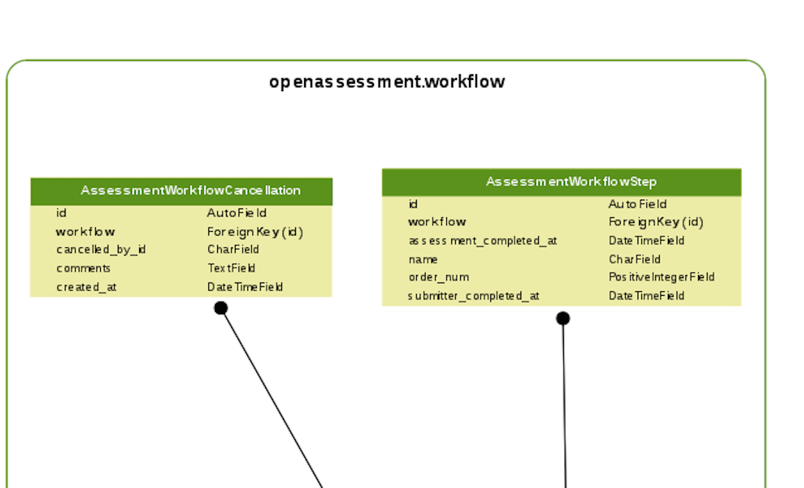
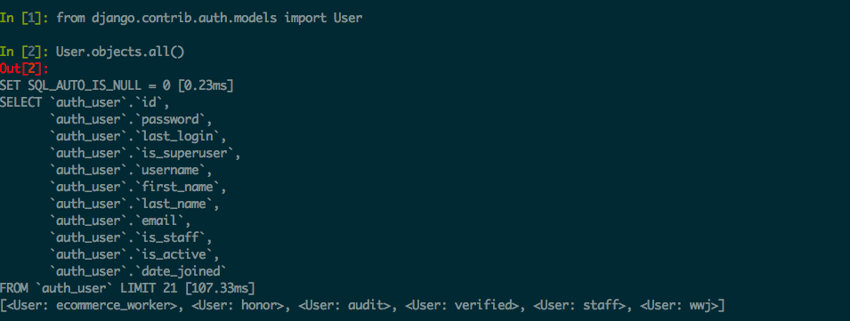

今晚喝了一杯咖啡写完edx前端开发相关
喝了一杯豆浆,写完了这篇
哈哈，希望内容没有饮料那么湿
dogwood版本的django升级到了1.8.7,所以我们有一大波好用的Django工具可用啦！
安装依赖
sudo /edx/bin/pip.edxapp install django-extensions
sudo /edx/bin/pip.edxapp install ipython[notebook]
修改devstack.py
在devstack.py末尾添加INSTALLED_APPS += ("django_extensions",),指令为：
sed -i '$a\INSTALLED_APPS += ("django_extensions",)' /edx/app/edxapp/edx-platform/lms/envs/devstack.py
sed -i '$a\NOTEBOOK_ARGUMENTS = ["--no-browser","--ip","0.0.0.0"]' /edx/app/edxapp/edx-platform/lms/envs/devstack.py
另外--notebook-dir /home/edx/notebook最好不要用，否则会因为path的问题带来困惑
哈哈最近用sed用得很high，许多场景下都可以替代vim
run notebook
sudo /edx/bin/python.edxapp /edx/app/edxapp/edx-platform/manage.py lms shell_plus --notebook --settings devstack

哦对了，由于
映射到外网
使用ngrok把8888端口映射到外网
./ngrok -config ./ngrok.cfg -subdomain edxbook 8888
然后访问返回的网址即可
效果图



开了它之后，我们几乎就不需要使用ssh了，所有操作都能在网页执行！！
登录认证
处于安全考虑可以为网页设置密码，注意不用的使用应该终止notebook
sudo -u edxapp bash
source /edx/app/edxapp/
sudo chmod -R 777 /home/ubuntu/.jupyter/
jupyter notebook --generate-config
ipython
在ipython里输入
from notebook.auth import passwd
passwd() #输入密码
#得到输出 ：sha1:f086762ff47a:3d896aedd90dfb4d49cc4f40bb0eed2072exxxx
将其加到vim ~/.jupyter/jupyter_notebook_config.py
c.NotebookApp.password = u'sha1:67c9e60bb8b6:3d896aedd90dfb4d49cc4f40bb0eed2072exxxx'
然后重新跑
sudo /edx/bin/python.edxapp /edx/app/edxapp/edx-platform/manage.py lms shell_plus --notebook --settings devstack，就只有输对密码才能进入啦
查看类图
sudo /edx/bin/python.edxapp /edx/app/edxapp/edx-platform/manage.py lms graph_models courseware --s
ettings devstack > courseware.dot
#转化为png格式的图片
dot -Tpng courseware.dot > courseware.png
#查看整个edx的类结构
sudo /edx/bin/python.edxapp /edx/app/edxapp/edx-platform/manage.py lms graph_models --settings devstack -a -g -o all.png
edx的整个类图如下，继承关系极其庞杂，图片很大就不贴过来了，有兴趣的小伙伴可以给我发邮件，我发给你
截取局部

以下是局部细节

debugsqlshell
sudo -u www-data /edx/bin/python.edxapp /edx/app/edxapp/edx-platform/manage.py lms debugsqlshell --settings devstack
from django.contrib.auth.models import User
User.objects.all()
这样我们就能看到orm真正执行的SQL语句，对调试帮助很大，当然你也可以借助django-debug-toolbar来做到这点
类似这样：

后记
最近准备请小伙伴w帮忙折腾edx前端，w对前端十分熟悉，哈哈此处做膜拜状，对linux不算太熟（ps：linux这么丐帮的东西留给我等技术宅来就好啦）
所以我想把服务器相关的部分对w屏蔽，使其专心在前端，准备通过fabric写好控制脚本，开启notebook，编译相关的工作保存成一个ipynb文件，只要回车就能执行！
所有的工作就可以在web端完成啦。
大工基本告成，好想找一群人来演示，以满足装x的需求 233
补遗
20160222
按照以上方式配置好后，即便在其他环境里安装jupyter(pip install )，django Shell-Plus环境也生效